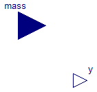

Extends from Modelica.Icons.SourcesPackage (Icon for packages containing sources).
| Name | Description |
|---|---|
| Power | Constant signal of type Power per Mass |
Constant signal of type Power per Mass

| Type | Name | Default | Description |
|---|---|---|---|
| PowerPerMass | k | Constant Power output value [W/kg] |
| Type | Name | Description |
|---|---|---|
| output PowerOutput | y | Power constant [W] |
| input MassInput | mass | [kg] |